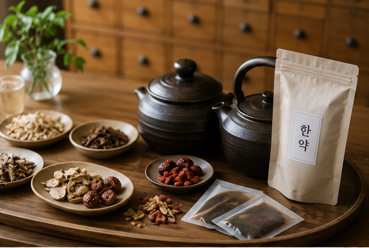

자도 자도 피곤하고,
예전처럼 회복이
잘 안 되시나요?
피로는 단순히 잠이 부족해서만 나타나는 것은 아닙니다. 수면, 과로, 스트레스, 식욕과 소화 상태, 현재 건강 상태 등 여러 요인을 함께 살펴볼 필요가 있습니다.
피로는 여러 모습으로 나타날 수 있습니다
단순히 “피곤하다”는 느낌 외에도 여러 불편이 함께 나타나는 경우가 있습니다.
쉬어도 피곤함
충분히 쉬거나 잠을 잤는데도 개운하지 않게 느껴질 수 있습니다.
집중력 저하
업무나 공부에 집중하기 어렵고 머리가 맑지 않은 느낌이 들 수 있습니다.
몸의 무거움
몸이 나른하거나 무겁고 평소보다 쉽게 지칠 수 있습니다.
근육통 · 두통
목·어깨의 긴장, 근육통이나 두통 등이 함께 나타나는 경우도 있습니다.
수면불량
잠들기 어렵거나 충분히 자도 개운하지 않게 느껴질 수 있습니다.
의욕 · 컨디션 저하
평소보다 의욕이 떨어지고 일상생활이 버겁게 느껴질 수도 있습니다.
오래 피곤하다고 모두 만성피로증후군은 아닙니다
피로가 장기간 지속되는 경우에는 단순한 과로뿐 아니라 수면 문제, 스트레스, 현재 복용 중인 약, 빈혈이나 갑상선 등 여러 건강 문제와의 관련성도 함께 고려할 필요가 있습니다.
만성피로증후군은 단순히 피로가 오래 지속된다는 이유 하나만으로 진단하는 질환은 아닙니다.
일상적인 활동 능력이 이전보다 현저히 감소하고, 휴식으로 충분히 회복되지 않는 피로와 함께 활동 후 증상의 변화, 수면 문제 등 여러 특징을 종합적으로 살펴 진단합니다.
원인을 확인할 필요가 있다고 판단되는 경우에는 혈액검사 등 관련 검사를 먼저 받거나 다른 의료기관의 진료를 함께 고려할 수 있습니다.
같은 피로라도 상태는 서로 다릅니다
밤늦게까지 일해 수면이 부족한 분과 충분히 자는데도 피로한 분, 식욕이 떨어지고 소화가 불편한 분, 스트레스가 심한 분의 상태는 서로 다를 수 있습니다.
그래서 보약을 상담할 때도 피로 하나만 보지 않고 현재의 생활과 몸 상태를 함께 살펴봅니다.
보약은 현재 상태에 맞춰 처방합니다
“보약”이라고 해서 누구에게나 같은 약을 사용하는 것은 아닙니다.
기력저하가 주된 분, 식욕과 소화가 함께 떨어진 분, 수면과 스트레스가 문제가 되는 분처럼 현재의 상태가 서로 다르기 때문에 진료 내용을 바탕으로 처방을 구성합니다.
인삼, 황기, 녹용 등 전통적으로 보익 목적으로 활용해 온 약재도 현재 증상과 체질, 기존 질환과 복용 중인 약을 고려해 사용 여부를 결정합니다.

특정 약재 하나보다
전체 처방 구성이 중요합니다
“피곤하니까 인삼을 먹을까요?” “홍삼을 계속 먹어도 괜찮을까요?” 라는 질문을 자주 듣습니다.
한약재는 각각의 성질과 쓰임이 다르기 때문에 한 가지 약재를 장기간 임의로 복용하기보다 현재의 상태와 증상, 복용 중인 약 등을 함께 고려하는 것이 좋습니다.
피로 관리의 기본도 생활습관입니다
보약클리닉에서 자주 듣는 질문
자도 자도 피곤한데 보약을 먹어야 하나요?
피로의 원인은 다양하기 때문에 피곤하다는 이유만으로 바로 보약을 결정하지 않습니다. 수면, 식사, 스트레스와 현재 건강 상태를 확인하고 필요한 경우 한약 처방을 상담할 수 있습니다.
만성피로와 만성피로증후군은 같은 건가요?
같은 의미는 아닙니다. 오랫동안 지속되는 피로를 만성피로라고 표현할 수 있지만, 만성피로증후군은 피로 기간뿐 아니라 활동능력 저하와 여러 특징적인 증상을 함께 살펴 진단하는 질환입니다.
피곤하면 무조건 한약을 먹으면 되나요?
아닙니다. 피로가 지속되는 이유를 먼저 살펴보는 것이 중요합니다. 필요한 검사가 있다고 판단되는 경우에는 관련 의료기관의 검사를 함께 고려할 수 있습니다.
보약은 누구나 같은 처방을 먹나요?
아닙니다. 식욕, 소화, 수면, 대소변, 기력과 스트레스 등 현재 상태에 따라 처방 구성은 달라질 수 있습니다.
공진단이나 경옥고도 보약인가요?
공진단과 경옥고 역시 전통적으로 보익 목적으로 활용되어 온 한약 처방입니다. 다만 모든 사람에게 동일하게 적합한 것은 아니므로 현재 건강 상태와 복용 목적을 확인한 뒤 복용 여부를 상담하는 것이 좋습니다.
녹용보약은 어떤 경우에 먹나요?
녹용은 한약 처방에 활용되는 약재 중 하나입니다. 현재 증상과 체질, 식욕과 소화 상태, 기존 질환 등을 확인한 뒤 사용 여부를 판단합니다.
여름에 한약을 먹으면 효과가 떨어지나요?
계절 때문에 복용한 한약의 성분이 땀으로 모두 빠져나가 효과가 없어지는 것으로 생각할 필요는 없습니다. 다만 더운 계절에는 식욕, 수면, 수분 섭취와 활동량 등이 달라질 수 있으므로 현재 상태에 맞춘 처방이 중요합니다.
한약은 얼마나 오래 먹어야 하나요?
복용기간은 처방 목적과 현재 증상, 진료 경과에 따라 달라질 수 있습니다. 모든 분에게 일정한 기간을 정해 동일하게 권하지 않습니다.
인삼이나 홍삼을 따로 먹어도 되나요?
인삼이나 홍삼도 현재 상태와 기존 질환, 복용 중인 약 등에 따라 적합성이 달라질 수 있습니다. 특히 다른 약을 복용하고 있다면 장기간 임의로 섭취하기 전에 의료진과 상담하는 것이 좋습니다.
다른 약을 먹고 있는데 보약을 같이 먹어도 되나요?
진료 시 현재 복용하고 있는 처방약, 일반의약품, 건강기능식품을 알려주세요. 복용 중인 약을 임의로 중단하지 마시고, 병용 여부를 상담한 뒤 결정하는 것이 좋습니다.
보약을 먹기 전에 검사가 필요한 경우도 있나요?
피로가 오래 지속되거나 평소와 다른 증상이 함께 있는 경우에는 현재 상태에 따라 혈액검사 등 관련 검사를 먼저 권할 수 있습니다.
보약 건강칼럼
피로와 기력저하, 보약·녹용·공진단 등 진료실에서 자주 듣는 질문을 중심으로 정리했습니다. 궁금한 제목을 누르면 내용을 확인하실 수 있습니다.
01. 요즘 계속 피곤한데, 보약을 먹으면 좋을까요?
“요즘 너무 피곤한데 보약을 먹어야 할까요?” 보약 상담에서 자주 듣는 질문입니다.
하지만 피로가 있다고 해서 곧바로 보약이 필요하다고 결정하는 것은 아닙니다. 피로는 수면 부족이나 과로처럼 생활과 관련된 경우도 있고, 식욕과 소화 상태, 스트레스, 현재 건강 상태 등 여러 요인과 함께 나타날 수 있습니다.
언제부터 피곤했는지 살펴봅니다
최근 업무량이 갑자기 늘었는지, 밤늦게까지 일하거나 수면시간이 줄었는지, 충분히 쉬어도 개운하지 않은지 등을 확인할 수 있습니다.
피로와 함께 식욕이 떨어졌는지, 몸무게에 변화가 있는지, 두통이나 어지럼, 수면의 변화 등 다른 불편이 있는지도 함께 살펴봅니다.
02. 보약은 몸이 ‘허한’ 사람만 먹는 건가요?
“제가 몸이 허한 것 같은데 보약을 먹어야 할까요?” 또는 “허약체질이 아니어도 보약을 먹나요?”라고 질문하시는 경우가 있습니다.
일상에서 ‘몸이 허하다’는 표현은 기운이 없고 쉽게 피곤하거나, 예전보다 회복이 더디다고 느끼는 상태를 넓게 표현하는 말로 사용되기도 합니다.
같은 ‘기력저하’라도 모습은 다를 수 있습니다
잠을 충분히 자도 피곤한 분도 있고, 식욕이 떨어지고 소화가 불편하면서 기운이 없다고 느끼는 분도 있습니다.
과로나 수면 부족이 이어진 뒤 평소보다 쉽게 지치는 분, 스트레스와 함께 수면과 컨디션이 달라진 분도 있습니다.
보약 상담 시에는 수면, 식욕, 소화, 대소변, 활동량과 스트레스, 기존 질환과 복용약 등을 함께 확인합니다.
03. 녹용은 보약에 꼭 들어가야 하나요?
보약을 생각하면 가장 먼저 녹용을 떠올리는 분들이 많습니다. “녹용이 들어가야 좋은 보약인가요?” 라고 질문하시기도 합니다.
녹용은 한약 처방에 사용되는 약재 중 하나이지만, 모든 보약 처방에 반드시 포함되는 것은 아닙니다.
특정 약재 하나보다 전체 처방을 봅니다
보약 처방은 현재의 피로 양상과 수면, 식욕과 소화, 대소변과 전반적인 건강 상태 등을 살펴 구성합니다.
따라서 녹용뿐 아니라 인삼, 황기 등 여러 약재의 사용 여부는 현재 상태와 처방 목적을 고려해 결정합니다.
복용 중인 약도 알려주세요
기존 질환이 있거나 현재 처방약이나 건강기능식품을 복용하고 있다면 진료 시 알려주세요.
특정 약재를 임의로 장기간 복용하기보다 현재 상태와 함께 살펴보는 것이 좋습니다.
04. 공진단과 일반 한약은 어떻게 다른가요?
공진단과 일반적인 탕약 중 어떤 것을 선택해야 하는지 궁금해하시는 분들이 있습니다.
공진단은 전통적으로 사용되어 온 한약 처방 중 하나이며, 일반적인 탕약과는 처방 구성과 제형 등이 다릅니다.
유명한 처방이라고 누구에게나 같은 것은 아닙니다
공진단이라는 이름이 잘 알려져 있다고 해서 모든 사람에게 동일하게 적합한 것은 아닙니다.
현재 어떤 목적으로 복용을 생각하고 있는지, 피로와 기력저하 외에 수면·소화·식욕 등에 어떤 불편이 있는지, 기존 질환과 복용약이 있는지를 함께 살펴볼 필요가 있습니다.
특정 처방을 먼저 정해두기보다 현재 건강 상태를 확인한 뒤 적절한 처방 방향을 상담할 수 있습니다.
05. 수술이나 큰 병을 앓은 뒤 보약은 언제부터 먹을 수 있나요?
수술이나 질환 치료 후 체력이 예전 같지 않다고 느껴 보약을 문의하시는 경우가 있습니다.
하지만 수술 후 또는 질환 치료 중의 상태는 개인마다 크게 다를 수 있기 때문에 특정 시점부터 누구나 보약을 먹을 수 있다고 일률적으로 말씀드리기는 어렵습니다.
현재 치료와 회복 상태를 먼저 확인합니다
어떤 수술이나 치료를 받았는지, 현재 치료가 종료된 상태인지, 식사와 소화는 어느 정도 가능한지, 상처 회복 상태와 전반적인 컨디션은 어떤지를 함께 살펴볼 수 있습니다.
현재 복용 중인 처방약이 있는지도 중요한 확인사항입니다.
06. 피곤하다고 모두 같은 보약을 먹는 것은 아닙니다
“피로에 좋은 보약 하나 추천해주세요.” 라고 말씀하시는 분들이 있습니다.
하지만 같은 ‘피로’라는 표현을 사용하더라도 실제로 느끼는 상태는 사람마다 다를 수 있습니다.
피로의 모습부터 서로 다릅니다
잠을 충분히 자도 개운하지 않은 분, 식욕이 떨어지고 소화가 잘되지 않으면서 기운이 없는 분, 야근과 수면 부족이 이어져 쉽게 지치는 분의 상태는 서로 다릅니다.
스트레스가 심해지면서 수면이나 두통, 목·어깨 긴장이 함께 나타나는 분도 있습니다.
특정 보약부터 정하지 않습니다
녹용이나 인삼처럼 특정 약재를 먼저 선택하거나, 잘 알려진 처방 이름만 보고 결정하기보다 현재 상태를 확인하는 과정이 먼저입니다.
진료 내용을 바탕으로 한약이 필요한지, 필요하다면 어떤 방향으로 처방할지를 상담합니다.
07. 보약은 얼마나 먹어야 하나요? 오래 먹을수록 좋은가요?
“한 제만 먹으면 되나요?” “몇 달 정도 먹어야 하나요?” 라는 질문도 자주 듣습니다.
보약이나 한약의 복용기간을 모든 사람에게 똑같이 정하기는 어렵습니다.
복용 목적과 현재 상태에 따라 달라집니다
최근의 과로와 수면 부족으로 일시적으로 컨디션이 떨어진 경우와, 오랫동안 식욕과 기력이 저하되어 있는 경우는 상태가 서로 다를 수 있습니다.
증상이 얼마나 오래 지속되었는지, 한약을 어떤 목적으로 복용하는지, 복용 후 상태가 어떻게 변화하는지 등을 함께 살펴볼 수 있습니다.
복용하면서 상태를 확인합니다
복용 중에는 식욕과 소화, 수면, 피로의 변화 등을 확인하고, 필요한 경우 진료를 통해 처방 방향이나 복용기간을 다시 살펴볼 수 있습니다.
08. 야근·육아·시험처럼 많이 지친 시기에도 보약을 상담할 수 있나요?
밤늦게까지 일하는 직장인, 육아와 일을 함께 하느라 충분히 쉬지 못하는 분, 시험을 준비하면서 생활이 불규칙해진 분처럼 특정한 시기에 피로가 크게 누적되었다고 느끼는 경우가 있습니다.
이럴 때도 단순히 “많이 지쳤으니 보약을 먹는다”기보다 현재 생활과 건강 상태를 먼저 살펴보는 것이 좋습니다.
수면과 식사가 얼마나 달라졌는지 확인합니다
평소보다 수면시간이 줄었는지, 밤늦게까지 깨어 있는 날이 많아졌는지, 식사를 자주 거르는지, 카페인 섭취가 늘었는지 등을 살펴볼 수 있습니다.
피로와 함께 소화불량이나 두통, 수면불량, 식욕저하 등 다른 불편이 있는지도 확인합니다.
휴식과 생활관리도 함께 중요합니다
한약을 복용하더라도 지속적인 수면 부족이나 과로를 그대로 두는 것보다 가능한 범위에서 수면과 식사, 휴식 시간을 함께 조절하는 것이 중요합니다.
피로가 지나치게 오래 지속되거나 생활 변화만으로 설명하기 어려운 증상이 있다면 현재 상태에 따라 필요한 검사도 고려할 수 있습니다.